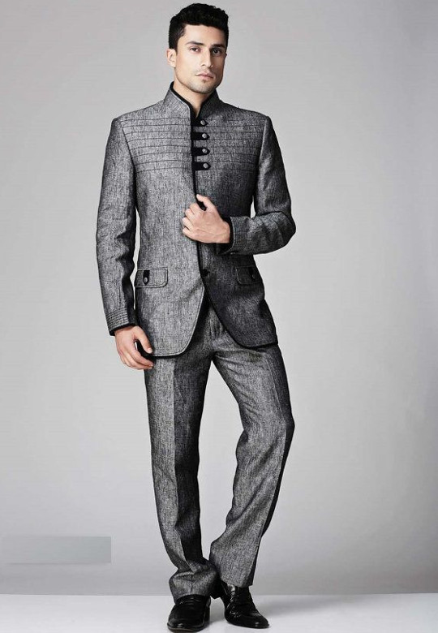
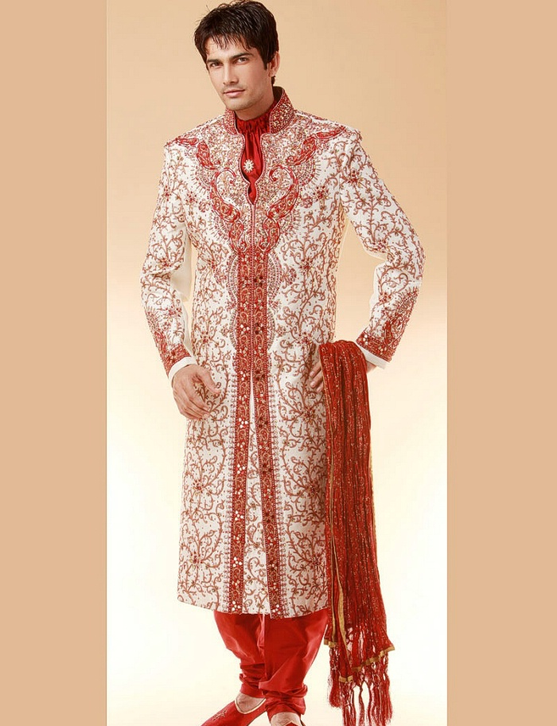
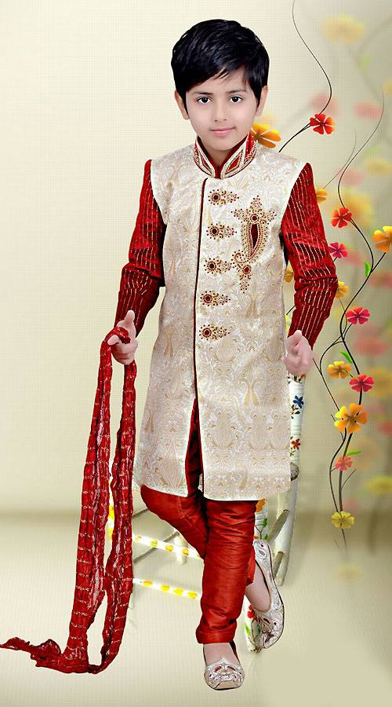
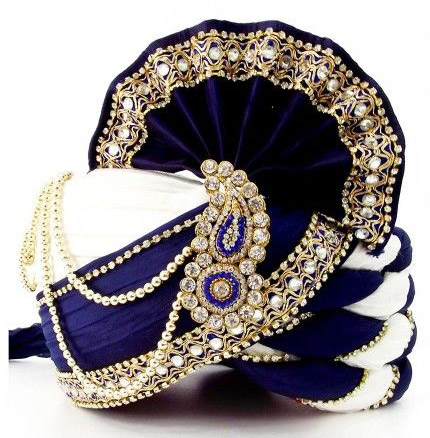
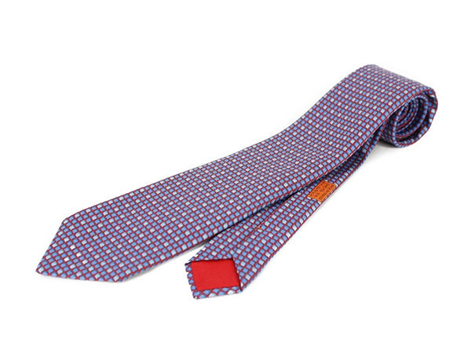
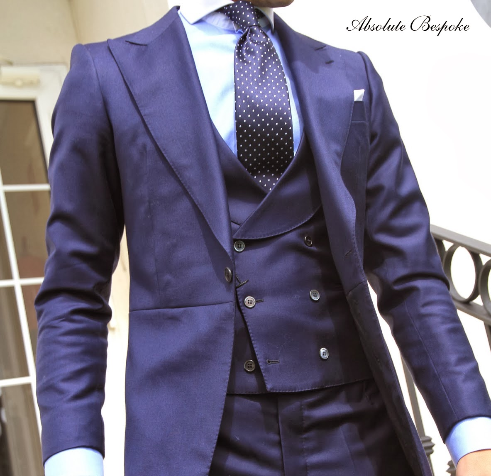

WEDDING-SHOP


कोट-पेंट
कोट पैंट की विस्तृत रेंज चिराग शोरूम में उपलब्ध है अपने मिलान पर्सनेलिटी कॉट पैंट खोजें।

शेरवानी
लेटेस्ट डिजाइनों के साथ चिराग शोरूम में वैवाहिक कपड़ों की विशाल रेंज है. यहां आपको शादी से लेकर हर सामान आसानी से मिल जाएगा। डिजाइनर और लेटेस्ट फैशन के यदि आप शौकिन हैं तो इस चिराग शोरूम का रूख ज़रूर करें।

शेरवानी,(CHILD$)
शेरवानी, कोट पेंट, हॉफ जैकेट, पार्टीवियर शर्ट, जिन्स टाऊजर, कुर्ता पैजामा का नवीनतम कलेक्शन है

सीकर एक एतिहासिक शहर है जहाँ पर कई अनोखे प्रकार के/ पाग / पगड़ी/ राजस्थानी साफा / जोधपुरी साफा / फेंठा / जैसलमेरी साफा जो की राजस्थान में पहना जाता है।
साफा
सीकर एक एतिहासिक शहर है जहाँ पर कई अनोखे प्रकार के/ पाग / पगड़ी/ राजस्थानी साफा / जोधपुरी साफा / फेंठा / जैसलमेरी साफा जो की राजस्थान में पहना जाता है।

टाई
छोटे बच्चों की स्कूल यूनीफॉर्म से लेकर कार्पोरेट पार्टियों तक की शान-ओ-शौकत का हिस्सा बन चुकी है. इसके अलावा कुछ लोगो को शादी या पार्टियों में भी टाई लगाने का बहुत शौक होता है. टाई व्यक्ति के आत्मविश्वास और व्यक्तित्व को भी बढाता है।
